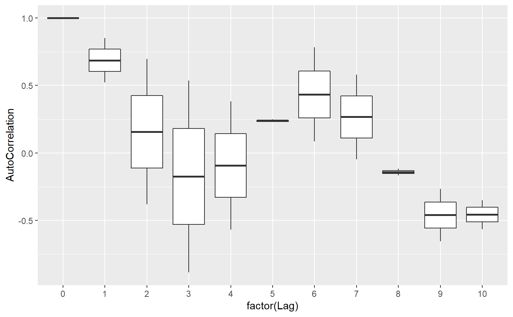

This function estimates the autocorrelation over time in a time series by a higher level unit, given by ID.
acfByID(xvar, timevar, idvar, data, lag.max = 10L, na.function = c("na.approx", "na.spline", "na.locf"), ...)
| xvar | A character string giving the variable name of the variable to calculate autocorrelations on. |
|---|---|
| timevar | A character string giving the variable name of the time variable. |
| idvar | A character string giving the variable name of the ID variable. Can be missing if only one time series provided, in which case one will be created. |
| data | A data.table containing the variables used in the formula. This is a required argument. If a data.frame, it will silently coerce to a data.table. If not a data.table or data.frame, it will attempt to coerce, with a message. |
| lag.max | An integer of the maximum lag to estimate. Must be equal to or greater than the number of observations for all IDs in the dataset. |
| na.function | A character string giving the name of the function to use to address any missing data. Functions come from the zoo package, and must be one of: “na.approx”, “na.spline”, “na.locf”. |
| ... | Additional arguments passed to |
A data.table of the estimated autocorrelations by ID and lag
For details, see Campbell, M. K., Mollison, J., & Grimshaw, J. M. (2001). Cluster trials in implementation research: estimation of intracluster correlation coefficients and sample size. Statistics in Medicine, 20(3), 391-399.
## example 1 dat <- data.table::data.table( x = sin(1:30), time = 1:30, id = 1) acfByID("x", "time", "id", data = dat)#> id Variable Lag AutoCorrelation #> 1: 1 x 0 1.0000000 #> 2: 1 x 1 0.5272823 #> 3: 1 x 2 -0.3846405 #> 4: 1 x 3 -0.8936820 #> 5: 1 x 4 -0.5734476 #> 6: 1 x 5 0.2329966 #> 7: 1 x 6 0.7732559 #> 8: 1 x 7 0.5874209 #> 9: 1 x 8 -0.1029345 #> 10: 1 x 9 -0.6451019 #> 11: 1 x 10 -0.5718883## example 2 dat2 <- data.table::data.table( x = c(sin(1:30), sin((1:30)/10)), time = c(1:30, 1:30), id = rep(1:2, each = 30)) dat2$x[4] <- NA res <- acfByID("x", "time", "id", data = dat2, na.function = "na.approx") ggplot2::ggplot(res, ggplot2::aes(factor(Lag), AutoCorrelation)) + ggplot2::geom_boxplot()